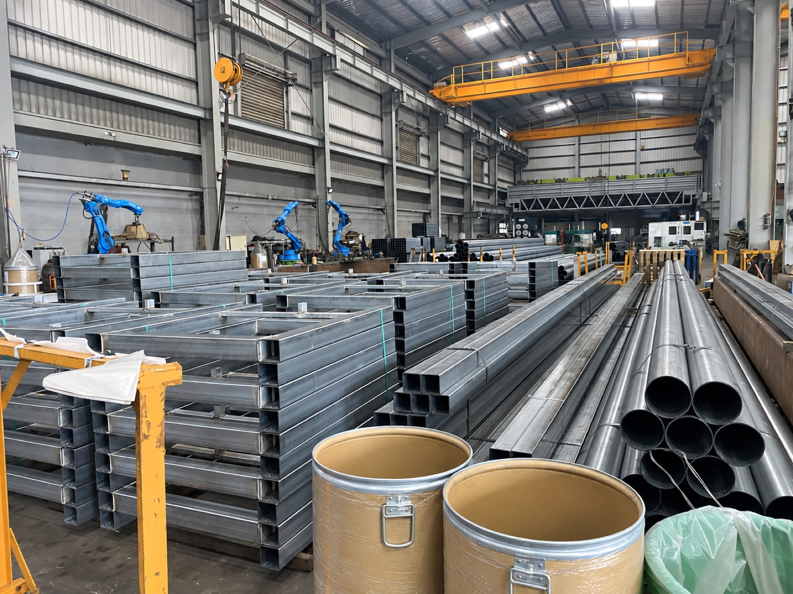
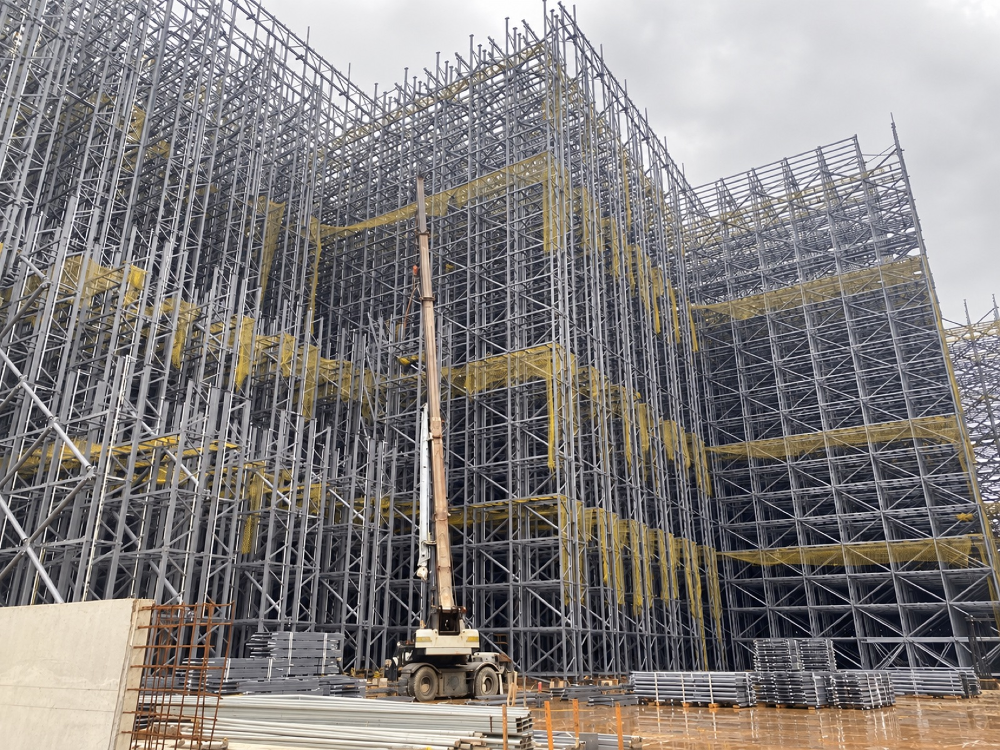
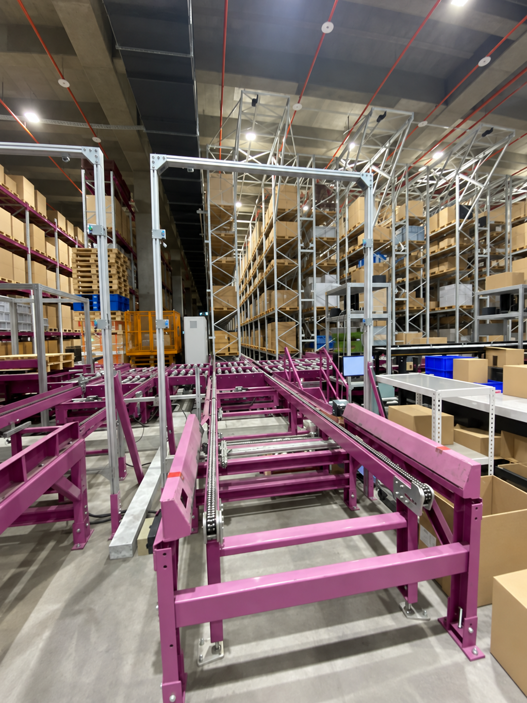
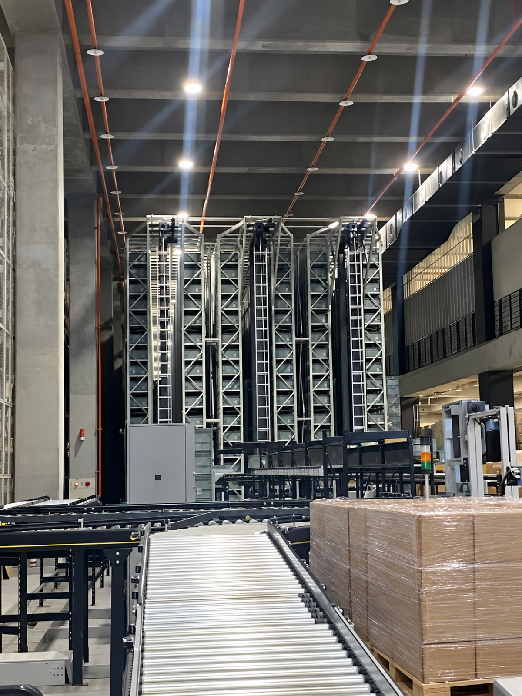
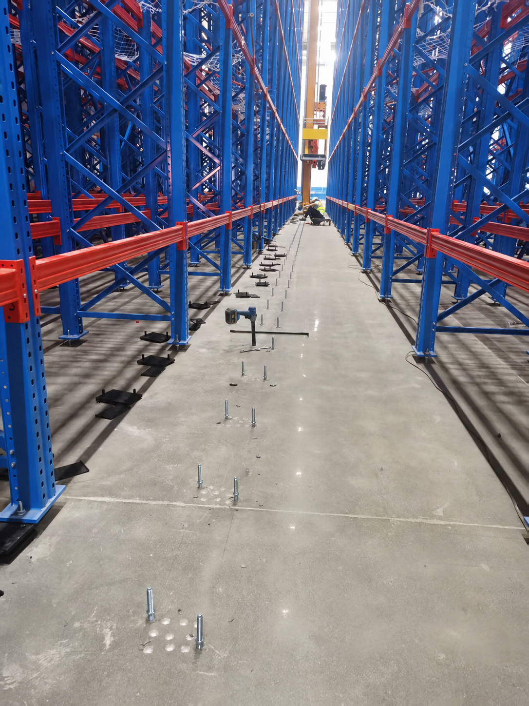
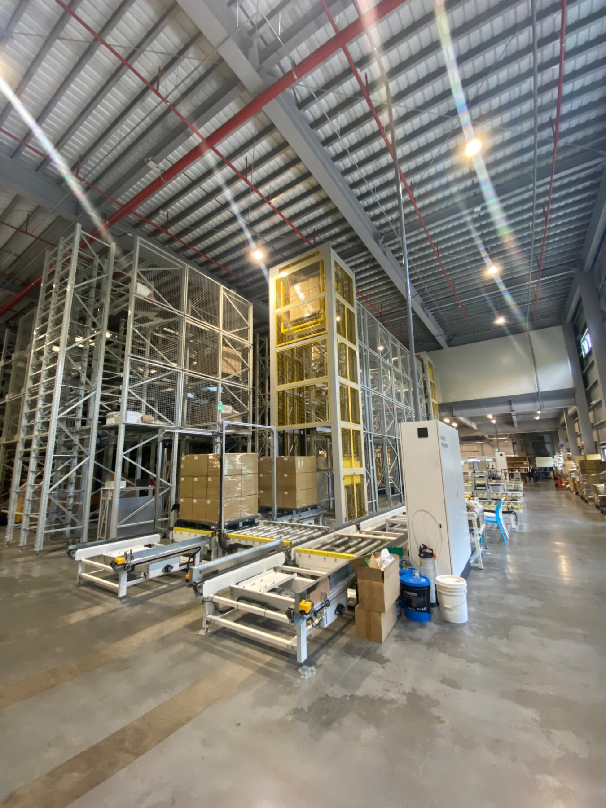
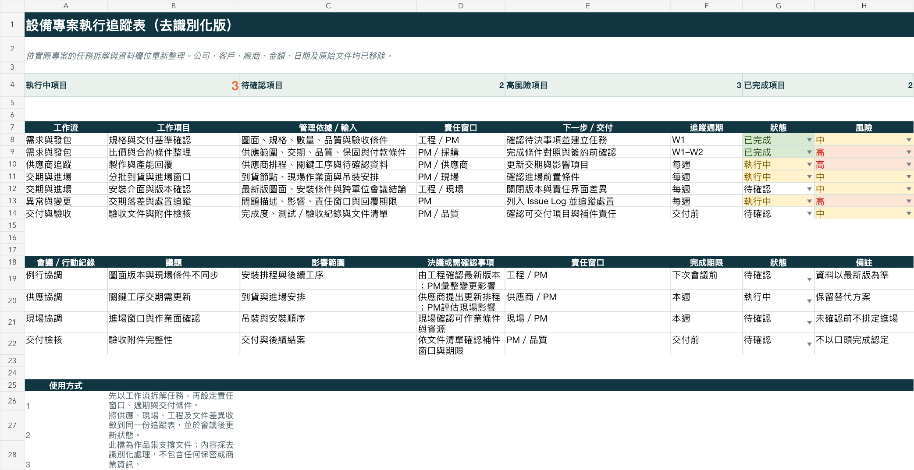

PROJECT MANAGEMENT · ANONYMIZED WORK EVIDENCE
工程與設備專案
進度管理與
交付協調工程／設備專案管理｜時程・風險・跨部門協調・交付追蹤
我的工作涵蓋需求與圖面確認、採購、加工廠協作，以及設備安裝與驗收。執行期間掌握製作、組裝與出貨進度；遇到圖面修改或交期延誤，釐清原因與影響，協調工程、供應商及現場調整安排，並追蹤處理結果，推進後續交付。
01 · PROJECT CONTROL METHOD
從需求確認
到製作與交付
以下整理工程與設備專案中的主要工作，包含圖面確認、採購、製作、安裝與驗收。流程與表格以去識別化方式呈現。
確認需求基準
彙整圖面、規格、數量、時程、現場條件與交付目標，辨識尚未決定的事項。
拆解工作與介面
將設計、採購、製作、施工、測試與文件責任，轉為可確認的工作項目。
建立節點與追蹤
記錄各項工作的進度、負責人及期限，依會議決議追蹤完成情況。
處理變動與風險
遇到版本、供應或現場異常時，先判斷影響，再提出處理選項與確認期限。
驗收與交付檢核
對照範圍、完成度、驗收紀錄與必要附件，確認可進入下一個交付或付款節點。
02 · CASE STUDY
時程、分工與變更
三個專案協調案例
依既有專案會議與追蹤紀錄整理，保留當時的問題、處理安排及後續確認事項。案例已去識別化。
CASE 01 · MATERIAL DELIVERY
材料交期未確認，進場怎麼安排？
現場已有預定進場時間，但材料日期尚未獲得明確承諾。訂單確認、下料與排工又互相影響，若直接照原日期安排人員，可能到場後仍無法施工。
處理安排
- 先查進度
- 核對訂單是否確認、下料進度及加工排工，找出交期卡在哪一步。
- 現場確認
- 將到現場確認製作狀況列入待辦，向供應端確認可以承諾的材料日期。
- 連動進場
- 若材料無法如期到位，留下延後進場紀錄，讓人員安排與材料日期一起調整。
我的工作核對供應進度與現場需求，釐清交期變動對進場的影響，協調材料日期與人員安排，追蹤後續調整。
CASE 02 · SITE & RESOURCE PLANNING
材料還沒齊，電氣人員如何進場？
電氣團隊準備進場，但圖面、電櫃位置、首批線槽與可施工區域需要一起確認。人力一次全數到位，未必能連續施工，因此先安排可做的工作，再依現場條件增加人員。
處理安排
- 先確認條件
- 核對圖面、電櫃位置、首批線槽與可施工區域，確認第一批人員能做哪些工項。
- 分批進場
- 先由少量人員進場，處理電櫃定位與現場熟悉；後續隨材料及工作面到位再增員。
- 接續追蹤
- 在人力與工作面安排中，同時記錄缺料、可施工區域及後續進場條件。
我的工作核對材料及施工條件，協調工程與現場確認可先執行的工項，安排人員進場順序並追蹤接續工作。
CASE 03 · CROSS-TEAM COORDINATION
圖面、材料與安裝進度的跨單位協調
安裝與設備端持有的圖面版本不同，電櫃位置、走線佈置及電纜開口資料也需要補齊。各樓層施工進度不一致，需把圖面確認、材料到位與安裝順序放在一起討論，才能安排接續工作。
我負責的協調與追蹤
- 銜接時程
- 向本地輔材供應商詢問交貨期，配合工程端發送確認圖面後，同步回覆供料資訊。
- 提供選項
- 整理本地採購價格，提供設備端比較其他採購來源；一起確認交期與結算方式。
- 釐清分工
- 將線材與線槽的供應分工、清單餘量及各樓層用料需求列入待確認事項。
協作分工工程端整理與確認圖面；我負責供應交期與價格資訊；設備及安裝端確認技術要求與施工安排。
PROJECT RECORDS
方案比較、變更
與工序銜接紀錄
以下依會議紀錄節錄並去識別化整理。保留當時的比較、決議與待辦，便於查看實際追蹤內容。
01｜安裝順序：三種方案的取捨
| 方案 | 條件與影響 | 會議記錄的結論 |
|---|---|---|
| 原順序 | 進出動線較順，較能銜接後續工種；但受營建交付進度限制。 | 保留比較，需對照營建與設備時程。 |
| 改由可施工區域開始 | 避開交付較慢區域；需調整工作站位置及材料存放安排。 | 要求安裝端提供分區時程，再比較整體影響。 |
| 改從另一側開口進出 | 平台組裝與設備動線受阻，空間擁擠且有安全疑慮。 | 設備團隊確認不可行，會議決議不採用。 |
當次會議已排除第三種方案；其餘方案仍待詳細時程比較後決定。
02｜範圍變動：報價、預算與付款一起核對
| 紀錄項目 | 核對內容 | 當時狀態／後續處理 |
|---|---|---|
| 計價方式 | 線槽報價是依實際數量計價，還是固定總價？ | 列為廠商待確認事項。 |
| 新增費用 | 材料及配件報價增加，工資維持不變；需分開看費用來源。 | 新增預算交由主管確認。 |
| 施工範圍 | 線槽是否跨樓層，會影響數量及施作範圍。 | 會議已確認不跨樓層，各層有獨立電箱。 |
| 付款安排 | 討論訂金與後續依工程進度請款的安排。 | 列為條款調整事項，核對合約版本。 |
| 設備異常修改 | 修改工作與原合約範圍、金額分開處理。 | 會議要求另開合約，避免混入原合約計價。 |
03｜工序依賴：哪些條件到位，下一項才能開始
| 前置條件 | 影響的工作 | 排程確認事項 |
|---|---|---|
| 營建交付、放樣區域可用 | 貨架分區安裝 | 將營建交付與安裝端分區排程對照，確認可先施工的區域。 |
| 貨架完成至可銜接區域 | 堆垛設備組裝與吊裝 | 預留分段組裝、安全距離及材料存放空間，避免動線被占用。 |
| 屋頂封閉、防水條件確認 | 對水敏感的軌道及相關設備安裝 | 確認封閉進度，區分可以先做與需要等待的工項。 |
| 圖面、電櫃位置與首批材料到位 | 電氣人員進場與增員 | 先做定位與現場熟悉，再依工作面安排後續人力。 |
表格呈現工序之間的依賴與會議確認事項；分區排程由相關施工及設備窗口提供。
03 · MILESTONE & DEPENDENCY
工作拆解與
里程碑追蹤
依既有專案紀錄整理。以完成條件確認下一工序能否開始，並追蹤圖面、材料、工作面及人力之間的依賴。
| 工作／里程碑 | 開始前確認 | 追蹤重點 | 完成依據／協作窗口 |
|---|---|---|---|
| 圖面與需求確認 | 尺寸、材料、工作範圍及版次 | 未決事項與修改範圍，避免舊版進入加工 | 確認版本與待辦紀錄 工程／需求端 |
| 材料採購與加工 | 訂購範圍、加工條件與材料交期 | 材料到位、加工順序、組裝與出貨安排 | 訂購確認及製作進度 採購／加工端 |
| 放樣與安裝準備 | 點位、工作面、吊裝與進場條件 | 鑽孔限制、工序重疊、分批到貨及卸料安排 | 點位及現場確認紀錄 工程／施工端 |
| 平台、貨架與輸送設備 | 材料到貨、前置工序及安裝範圍 | 區域交接、尺寸落差、重工及後續工序影響 | 安裝進度與缺失紀錄 加工／設備／現場 |
| 配電與測試準備 | 圖面、盤體、線槽及可施工區域 | 依工作面安排人力，追蹤送電及檢查事項 | 施工與檢查紀錄 工程／機電端 |
| 驗收與結案 | 交付範圍、測試及文件條件 | 待改善事項、補件、計價與付款條件 | 驗收附件與請款核對 專案／財務／供應商 |
04 · ISSUE & COMMUNICATION
異常處理與
會議追蹤
會議紀錄包含異常原因、影響範圍、處理方案、負責人與期限。比較可行方案及其影響，將需核決的事項另外列出，並追蹤決議後的執行情況。
RISK / ISSUE LOG · SAMPLE
關鍵材料交期與現場作業面不同步
採購／現場確認分批到貨、進場窗口與對後續工序的影響。
W4
圖面版本與報價排除項目待釐清
工程指定工程窗口，確認最新版次及必要製程。
W2
供應商產能與關鍵工序有重疊
供應商要求產能排程佐證，評估備援與調整方案。
W5
驗收附件需於交付前完成檢核
PM／品質以驗收條件與附件清單安排補件責任與期限。
W7
05 · FIELD EVIDENCE
加工與設備
現場紀錄
金屬加工、設備安裝及交付現場照片。下方說明列出我在相關專案負責的協作與追蹤工作。

核對圖面、尺寸與材料，追蹤製作、組裝及出貨。

追蹤工作面、材料進場及各區安裝順序。

確認設備位置、安裝介面及前後工序銜接。

核對設備與現場條件，整理待確認及待改善事項。

確認點位、走道及作業條件，協調後續安裝。

追蹤測試、驗收文件及改善事項的完成情況。
06 · EXCEL PROJECT TRACKER
專案追蹤表
與會議待辦
依既有工作欄位重新整理的去識別化示例：工作項目、依據、責任窗口、下一步、追蹤週期及風險。狀態為展示用，非目前專案進度。

07 · PROCUREMENT & CONTRACT CONTROL
採購、變更
與付款核對
將採購條件、工程進度、追加項目及付款附件一起核對，保留每次確認與核決的依據。
| 管理事項 | 核對內容 | 留下的紀錄 |
|---|---|---|
| 詢比議價 | 材料、加工、施工、付款、保固及報價排除項目 | 可比較的報價與待確認條件 |
| 圖面與範圍變更 | 版次、修改項目、已製作數量、重工及交期影響 | 變更清單、追加報價與書面確認 |
| 估驗與請款 | 前期、本期與累計金額，對照原合約及追加項目 | 計價核對、核決紀錄與附件清單 |
| 驗收與缺失 | 交付範圍、現場完成情況、測試及補件事項 | 照片、驗收紀錄與改善追蹤 |
案例、表格與照片已去識別化；敏感金額、日期及識別資料未公開。